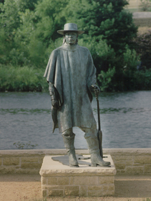

<!DOCTYPE html>
<html lang="en">
<head>
  <title>Hello, Map!</title>
  <meta charset="UTF-8" />
  <meta name="viewport" content="width=device-width,initial-scale=1" />
  <meta name="description" content="" />

  <!-- calls for the arcgis api's CSS file and JS library. -->
  <link rel="stylesheet" href="https://js.arcgis.com/4.30/esri/themes/light/main.css">
  <script src="https://js.arcgis.com/4.30/"></script>

  <!-- Adding the modules, API key, and map constant needed for a full screen map app -->
  <script>
    require([
      "esri/config",
      "esri/Map",
      "esri/views/MapView",
      "esri/layers/GraphicsLayer",
      "esri/Graphic",
      "esri/geometry/Point",
      "esri/symbols/SimpleMarkerSymbol",
      "esri/PopupTemplate"
    ], function (esriConfig, Map, MapView, GraphicsLayer, Graphic, Point, SimpleMarkerSymbol,PopupTemplate) {

      esriConfig.apiKey = "AAPTxy8BH1VEsoebNVZXo8HurNAUgv3aeRUmzJ4ckMevLQKGrztJzvz8D2QfKCuiIu54kuPlJgQ5LaYndfRIaWOj-l62Dkhw1ar_Y7pSWDINLJdo0SOuys_MN4exQu3ZCeYZLk9JtMFQfS8DTHxOhq5pm0i-sjFpuDWcC71yFMKkj_2DFL528sZRGUlAOs6-ULTW8bY3iTtCMjOBFA05re8GpjKasI2A5QamySWtbjhq0SU.AT1_pCWailZs";
      
      const map = new Map({
        basemap: "arcgis-topographic" // Basemap layer
      });

      const view = new MapView({
        container: "viewDiv",
        map: map,
        center: [-97.7431, 30.2672], // Longitude, latitude
        zoom: 13
      });

      // Create a GraphicsLayer
      const graphicsLayer = new GraphicsLayer();
      map.add(graphicsLayer);

      // Define the point geometry using the Point class
      let point = new Point({
        longitude: -97.750689, // Longitude of Stevie Ray Vaughan Statue
        latitude: 30.263098 // Latitude of Stevie Ray Vaughan Statue
      });

      // Create a symbol for drawing the point
      const simpleMarkerSymbol = {
        type: "simple-marker",
        style: "diamond", // Change the style to diamond
        color: [0, 0, 139], // Blue
        outline: {
          color: [255, 255, 255], // White
          width: 1
        }
      };

      // Define the popup template
      let popupTemplate =  new PopupTemplate({
        title: "Stevie Ray Vaughan Statue",
        content: ""
      });

      // Create a graphic and add the geometry, symbol, attributes, and popupTemplate to it
      const pointGraphic = new Graphic({
        geometry: point,
        symbol: simpleMarkerSymbol,
        popupTemplate: popupTemplate
      });

      // Add the graphic to the view's graphics layer
      graphicsLayer.add(pointGraphic);
    });
  </script>

  <!-- css to make a full screen map -->
  <style>
    html,
    body,
    #viewDiv {
      padding: 0;
      margin: 0;
      height: 100%;
      width: 100%;
    }
  </style>

</head>
<body>

  <!-- the div to displays the map  -->
  <div id="viewDiv"></div>

</body>
</html>